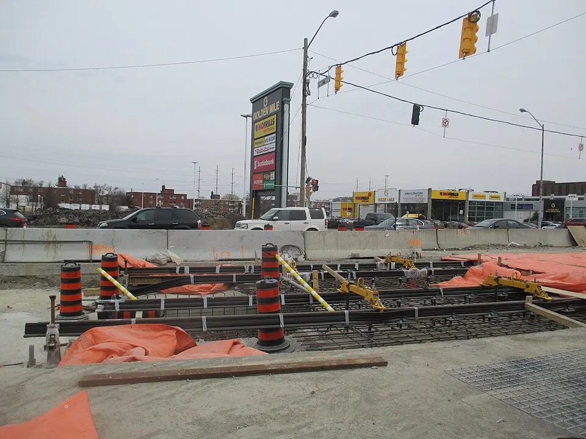

Signal
SignalStation atlas / O'Connor
Station history
O'Connor


Station history
Work on the train guideway began late in the year. The first concrete pour followed in early 2019, before the rails went in.
The new surface stop served the stretch of Eglinton Avenue East between Victoria Park Avenue and Eglinton Square.